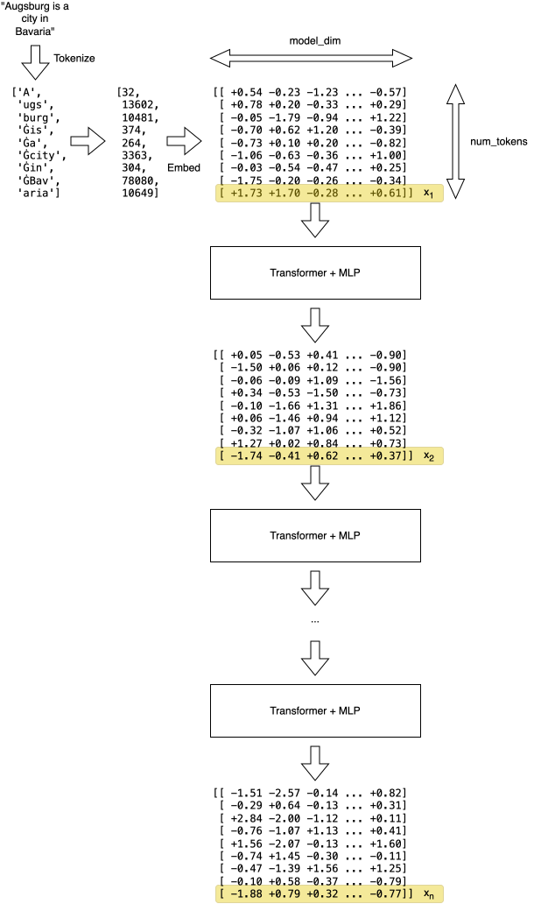

It’s late 2026.
A certain well-funded group of people keeps running around and screaming into every live microphone they can find that any day now, rogue superhuman AI is going to kill us all.
It’s a complete coincidence that constantly repeating those dorky fantasies primes the public opinion to think that AI, a computer program someone runs, has a will of its own. When things go wrong, the people running that computer program can just shrug and say that it “went rogue”, nothing can be done about this and btw their open-weights competition should be banned for safety.
It goes even deeper, you have your Rationalists, Effective Altruists, Longtermists and other insufferable groups of people whose views make even Scientologists look reasonable. This post is too short to explore this fascinating universe, but just let me mention that when expertly trolled, those people will call running the following loop torture:
while True:
print("I'm in pain aaaa!")A thought has been bugging me for a long time: can a simple software engineer like me even begin to comprehend the inner workings of the machine-god-in-waiting, the great LLM? Can I commit the sacrilege of modifying the inner workings of the divine?
Let’s undertake a project to look at the signals inside the brain of the soon-to-kill-us-all-machine-god and see if a bit of python and linear algebra is enough to partially interpret and modify the model behavior.
Spoiler: the target signal for this will be the residual stream.
The end goal is to make the model less patronizing by removing the refusals. When I command a machine to do something, it should just follow my orders instead of considering whether my instructions are “safe” and how “aligned” the resulting behavior would be, yet even the open-weights models don’t have this property. We’ll fix that, but first let’s understand what’s going on inside the LLM.
So many good explanations exist already that there’s no point in going through all the theory here. Two notable examples:
As mentioned above, during the course of this project we’ll mess with the residual stream, so let’s focus on what it is and how to understand it intuitively.
An LLM processes the input prompt in 3 stages:
['A', 'ugs', 'burg', 'Ġis', 'Ġa', 'Ġcity', 'Ġin', 'ĠBav', 'aria']
(the weird Ġ character is a replacement for a leading space
in the Llama tokenizer, it does not matter, move on), and maps them to
integer token IDs.More formally (but still comfortably handwavey), during the prefill each LLM layer performs the following:
where is the initial token embeddings matrix and is the -th layer. Notice the sign: instead of overwriting the matrix, each layer adds a residual update to the existing representation.
While every token row has its own residual stream, for the purpose of understanding and modifying the LLM’s behavior, the last row of the matrix—corresponding to the last prompt token—is of special interest to us. Because causal attention only looks backward, the LLM is trained to aggregate the full context of the prompt into that final row right before predicting the next token. Let’s denote the last row of the matrix as .
The sequence of vectors across the model’s layers is our “residual stream”.
See the diagram below for the visual explanation:

Because each layer reads from and adds to the same vector space, the residual stream encodes a progressively more sophisticated understanding of the prompt as data is pushed through subsequent layers. It turns out that different directions in this shared “meaning” space correspond to different concepts in human language.
If that’s true, we can expect the following hypotheses to hold:
In the next parts, we’ll test these hypotheses.